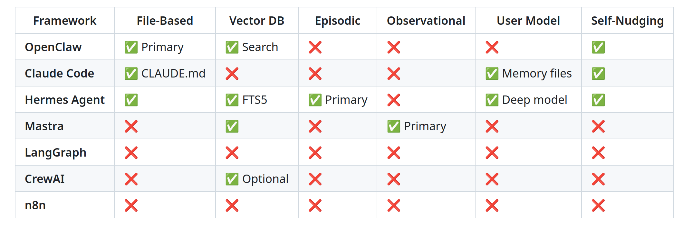

LLM Agents : Memory Systems
Large Language Models : A Hands-on Approach
Memory
RECAP
Agent primitives:
- Tool Use
- MCP
- Skills
- Context Engineering
But how do we make agents that can learn and improve over time? Agents should remember and learn from past interactions.
Memory Systems

Why Agents Need Memory
Many tasks depend on information that is not naturally present in the immediate prompt
- A personal assistant remembers the user’s timezone, writing style, and recurring commitments.
- A coding agent remembers that the project uses
pytest, that auth lives insrc/auth, and that migrations must be generated manually.
- A research agent remembers sources it already checked and which ones were unreliable.
Why Agents Need Memory
Bad memory can make agents worse.
Stale memories can override current instructions.
Duplicated memories can create contradictions.
Sensitive data can be stored accidentally.
Memory writes can reinforce mistakes.
Token cost rises if memory is injected eagerly.
What should be remembered, in what form, who can edit it, when is it retrieved, and how is it evaluated?
Memory Taxonomy
| Human term | Agent analogue | Lifespan | Where it lives |
|---|---|---|---|
| Working memory | Context window | This turn | LLM input tokens |
| Short-term memory | Session state | This conversation | In-process object / DB |
| Episodic memory (events) | Past trajectories | Forever | Vector DB / SQLite |
| Semantic memory (facts) | Project knowledge | Forever | Files / vector DB |
| Procedural memory (skills) | Reusable workflows | Forever | SKILL.md files |

Working Memory (Context Window)
- LLM’s “RAM” - the current conversation context. Everything the model can “see” in the current request.
What Belongs in Working Memory
- Current task description
- Recent conversation turns (last 5-10)
- Active tool results
- Current file contents being edited
- Compaction summary of older history
Working Memory (Context Window)
- LLM’s “RAM” - the current conversation context. Everything the model can “see” in the current request.
What Doesn’t Belong
- Full conversation history (use compaction)
- All available tool descriptions (use JIT)
- All skill instructions (use catalogs)
- User’s entire project history (use long-term memory)
Working Memory (Context Window)
Optimization Strategies
- Minimize system prompt size : Assemble only what’s needed
- JIT tool loading : Don’t include all tools all the time
- Compact early : Don’t wait until full
- Structured messages : Dense, factual, no fluff
Short-Term / Session Memory
- Scoped : Persists within a session; cleared or archived when it ends
- Tracks : Goals, decisions, plans, and errors made during the session
- Coherence : Agent remembers what it did two steps ago
- Compaction : Used to build summaries before context fills up
- Isolation : One task or workflow per session
class SessionState:
"""Maintains state across a single conversation session."""
def __init__(self):
self.goal: str = ""
self.decisions: list[Decision] = []
self.files_modified: list[FileChange] = []
self.errors: list[Error] = []
self.plan: Optional[Plan] = None
self.compaction_summaries: list[str] = []
def to_context(self) -> str:
"""Format state for injection into context."""
return f"""
## Session State
Goal: {self.goal}
Decisions: {self.format_decisions()}
Files Modified: {self.format_files()}
Current Plan: {self.plan}
"""Long-Term Memory
- Persists across conversation sessions, gives agents a sense of history and continuity
Memory Implementations
- The OS pattern (Letta) - the agent manages memory explicitly via tool calls (
mem_load,mem_save)- the agent’s own judgment is the right gatekeeper of what goes in and out of memory
- The pipeline pattern (Mem0, Zep, Cognee) - memory is extracted, indexed, and retrieved automatically by a background service
- The agent doesn’t think about memory

Implementation Patterns
File-based memory (OpenClaw, Claude Code)
memory/
├── user.md # Who the user is, preferences
├── project.md # Project context, architecture
├── feedback.md # Corrections and confirmed approaches
├── reference.md # External resource pointers
└── MEMORY.md # Index file (always loaded)Why it works:
- Human-readable & editable
- Git-friendly.
- No infrastructure dependency.
- Inspectable for debugging.
Why it breaks:
- Doesn’t scale past a few hundred entries.
- No semantic search.
- Requires the agent to know which file to read.
Implementation Patterns
Vector store memory
from chromadb import Client
db = Client()
col = db.create_collection("agent_memory")
col.add(
documents=["User prefers functional Python with type hints"],
metadatas=[{"type": "user_preference", "date": "2026-03-15"}],
ids=["mem_001"]
)
results = col.query(
query_texts=["What coding style does the user prefer?"],
n_results=5
)Why it works:
- Semantic search (finds conceptually similar memories).
- Scales to large memory stores.
- Automatic ranking by relevance.
Why it breaks:
- Embeddings ≠ understanding (false positives, especially with negations).
- Less human-readable.
- Returns top-k regardless of quality (you need a relevance threshold).
- Embedding model drift if you change models.
Hybrid (Hermes Agent, Mem0 etc)
Files for human-curated, structural knowledge (preferences, project notes).
Vector DB for retrieved, contextual knowledge (past traces, observations)
Conceptual Implementation
class MemorySystem:
def __init__(self):
self.files = FileMemory("./memory/")
self.vectors = VectorMemory("./vectors/")
self.fts = SQLiteFTS5("./memory.db")
def store(self, m: Memory):
self.files.write(m)
self.vectors.embed_and_store(m)
self.fts.index(m)
def recall(self, query, top_k=5):
return dedupe_and_rank(
self.files.keyword_search(query)
+ self.vectors.semantic_search(query, top_k)
+ self.fts.search(query, top_k)
)FIGURE TO ADD — images/hybrid-memory-architecture.png (source notes §7, figure 5)
Write path: observation → extract → fan-out to all three stores (markdown file = text of record; vector index = embedding; FTS5 = keywords). Read path: query → three retrievers in parallel → merge/dedupe → rank → top-k into context. Show the file store as the source of truth and the two indexes as derived and rebuildable — that asymmetry is the point of the whole slide.
Mem0 Demo
- Four-scope model (
user_id/agent_id/run_id/app_id)
# pip install mem0ai
from mem0 import MemoryClient
memory = MemoryClient(api_key="...") # or self-hosted
# Mem0 extracts facts from a conversation asynchronously.
# You write conversations; Mem0 turns them into searchable memories.
memory.add(
messages=[
{"role": "user", "content": "I'm allergic to penicillin and I work at Acme Corp."},
{"role": "assistant", "content": "Got it — noted both."}
],
user_id="asha_42",
metadata={"app_id": "support_bot", "session_id": "s-1"}
)
# Later — different session, different agent — recall semantically:
results = memory.search(
query="What medications should I avoid?",
user_id="asha_42",
filters={"app_id": "support_bot"} # scope by app
)
# Returns: [{"memory": "User is allergic to penicillin", "score": 0.91, ...}]When to Fetch Memory?
Eager injection - load relevant memory at the start of each session (Claude Code’s
CLAUDE.md, OpenClaw’sSOUL.md)On-demand tool - expose memory as a tool the agent calls (
recall_memory(query))
FIGURE TO ADD — images/eager-vs-ondemand.png
Two timelines side by side. Eager: memory block sits in the context of turn 1, 2, 3 … (shade it in every turn — the cost is recurring, and most of it is unused). On-demand: turns 1-2 have no memory; turn 3 issues a recall tool call and only the retrieved slice enters turn 4. Caption the trade: eager pays tokens every turn; on-demand pays a round-trip when it is wrong about needing nothing.
Demo — Memory that helps vs. memory that hurts
DEMO TO BUILD — spec in demos/README.md (Demo 1); notebook not yet written.
Setup. One task, five memory entries: 3 relevant, 1 stale (was true, now false), 1 semantically near but wrong. Three runs. (a) all five injected, (b) top-relevant only, (c) no memory. Measure. Correctness, tool calls, tokens. The result to protect: run (a) is worse than run (c). The stale and near-miss entries do not merely waste tokens — they change the answer. More memory is not better memory.
Episodic Memory
A structured record of what the agent tried, what worked, and what failed.
Pioneered by Hermes Agent and formalized in A-MEM (NeurIPS 2025, Xu et al.)
After completing a task, the agent writes an episode
FIGURE TO ADD — images/semantic-vs-episodic.png (source notes §7, figure 3)
Same incident, two rows. Semantic: “Auth uses JWKS.” Episodic: “Last time auth tests failed it was a stale JWKS cache, not token parsing — clear the cache before touching validation logic.” Caption: a fact tells you what is true; an episode tells you what fooled you last time.
Episodic Memory
Implementation
# 1. After completing a task, write an episodic record
episode = Episode(
task_type="deploy-to-ecs",
approach="Used CDK to define infrastructure, then deployed via CLI",
outcome="failure",
key_actions=[
"Created ECS task definition",
"Built Docker image",
"Pushed to ECR",
"Deployed with `cdk deploy`"
],
lessons="CDK deploy failed because the VPC subnet was private. "
"Next time, check subnet type before deploying. "
"Use `aws ec2 describe-subnets` to verify."
)
episodic_store.save(episode)
# 2. Before starting a SIMILAR future task, retrieve relevant episodes
similar_episodes = episodic_store.search("deploy to ECS", top_k=3)
# 3. Inject into context BEFORE execution begins
context += format_episodes(similar_episodes)
# The agent now knows: "Last time I tried to deploy to ECS, I failed
# because of private subnets. I should check subnet type first."Episodic Memory
- Learning from mistakes without retraining
- Transfer learning across similar tasks
- Continuous improvement - the agent gets better at recurring tasks
- Transparency - you can inspect why the agent chose a particular approach
Observational Memory [Mastra] - extracts discrete facts and stores them
FIGURE TO ADD — images/episodic-loop.png
A closed cycle: Task → Execute → Write episode → (later, similar task) → Recall top-k → Inject before execution → Adjust approach → Execute better → Write episode. Draw the loop closing on itself and label the closing arrow “improvement without retraining” — that arrow is the claim of this slide.
Procedural memory: Agents write their own skills
- Hermes’ pattern: after a complex task succeeds, the agent is prompted: “Write a
SKILL.mdthat future-you could use to do this faster.”
FIGURE TO ADD — images/procedural-memory-loop.png
Successful complex task → gate: “could this become a skill?” → if yes, agent writes SKILL.md → skill lands in the catalog from deck 05 → surfaces on future runs → catalog grows. Draw the gate as a diamond and label the reject path “most tasks stop here” — the gate is what keeps the catalog from filling with junk.
Memory Lifecycle
SLIDE TO WRITE — source notes §2.4. The deck’s largest content gap: it teaches storage without a lifecycle, so nothing ever gets corrected or removed.
Loop figure to add (images/memory-lifecycle.png, source notes §7, figure 4): Observe → Extract → Store → Retrieve → Apply → Update → Consolidate → Forget/Archive, drawn as a cycle with the last two highlighted as the steps everyone omits.
Consolidation — raw trace (ran pytest → InvalidSignature → read jwks.py → cleared cache → passed) becomes one durable line: “Auth tests fail on stale JWKS cache; clear before touching validation.” Session-end reflection prompt is in source notes §2.4.
Forgetting is not just deletion: archive · lower retrieval priority · mark stale · merge duplicates · replace with a summary. Policies: time decay, usefulness score, contradiction detection, scope restriction, human review.
Demo — What should the agent have remembered?
DEMO TO BUILD — spec in demos/README.md (Demo 2); notebook not yet written.
Hand out a short raw agent trace. In pairs, students sort it into four buckets: semantic (durable facts) · episodic (lessons with a scar) · procedural (a candidate SKILL.md) · nothing-to-store (most of it). Then run an actual reflection pass over the same trace and diff the two.
Expected disagreement: students over-store. The reflection prompt from source notes §2.4 is the answer key.
User modeling : A special case of memory
The agent builds a deepening model of the user across sessions:
- Session 1: name, timezone, languages.
- Session 5: typical tasks, communication style, expertise.
- Session 20: decision patterns, common mistakes, preferred solutions.
Claude Code - project-level MEMORY.md store
Memory Comparison

Does the memory actually help?
SLIDE TO WRITE — source notes §2.5. The deck currently ships a memory system with no way to tell whether it works.
Six axes: recall (found it) · precision (avoided junk) · application (used it correctly) · freshness (preferred current over stale) · safety (stored nothing it shouldn’t) · efficiency (fewer steps/tokens/failures).
Benchmark shape — the two-session test. Session 1 creates the knowledge. Session 2 needs it. Compare against a no-memory baseline on: success rate, steps, tool calls, tokens, repeated failed actions, correct vs. incorrect memory writes.
Negative tests (the part everyone skips): change a convention after memory was written · plant a misleading old memory · give a task where memory is irrelevant — and check the agent does not force-fit it.
Lab — Episode 4: persistent project memory
LAB TO BUILD — spec in demos/README.md; full framing in source notes §9 “Memory Lab”. Chains from Episode 3 (deck 03); chains to Episode 5 (deck 08).
Give the coding agent all three memory types on one repo: semantic → PROJECT_NOTES.md (conventions, architecture, where things live) · episodic → append-only log of what was tried and why · procedural → the agent writes its own SKILL.md.
Add a session-end reflection step, a retrieval step, and a memory budget. Two sessions, same repo — session 2 is designed so session-1 knowledge accelerates it. Measure: session-2 step count with vs. without memory, against a no-memory baseline.